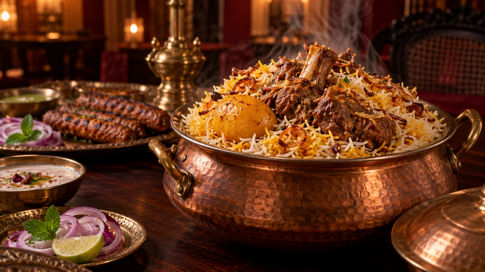
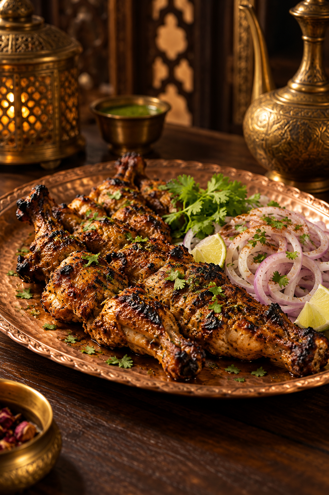
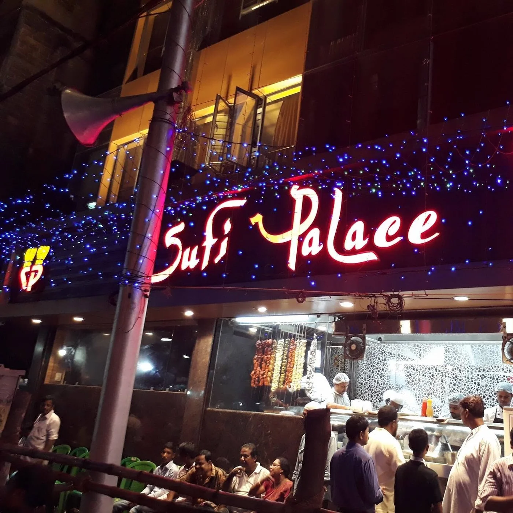
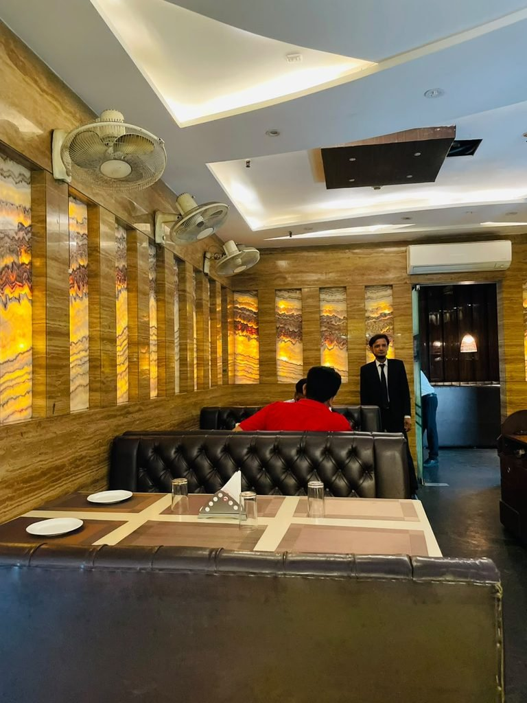
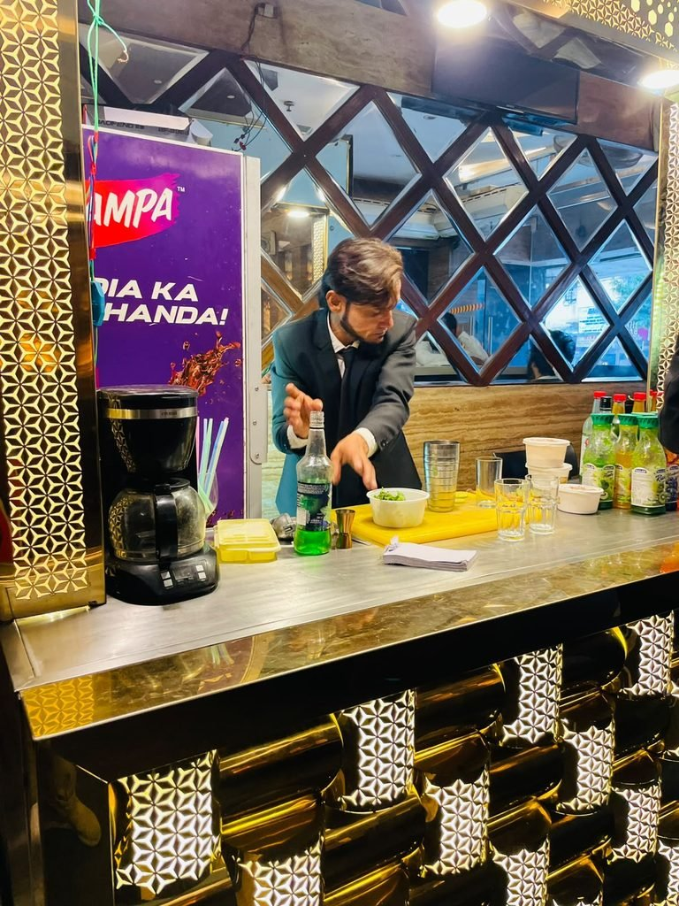
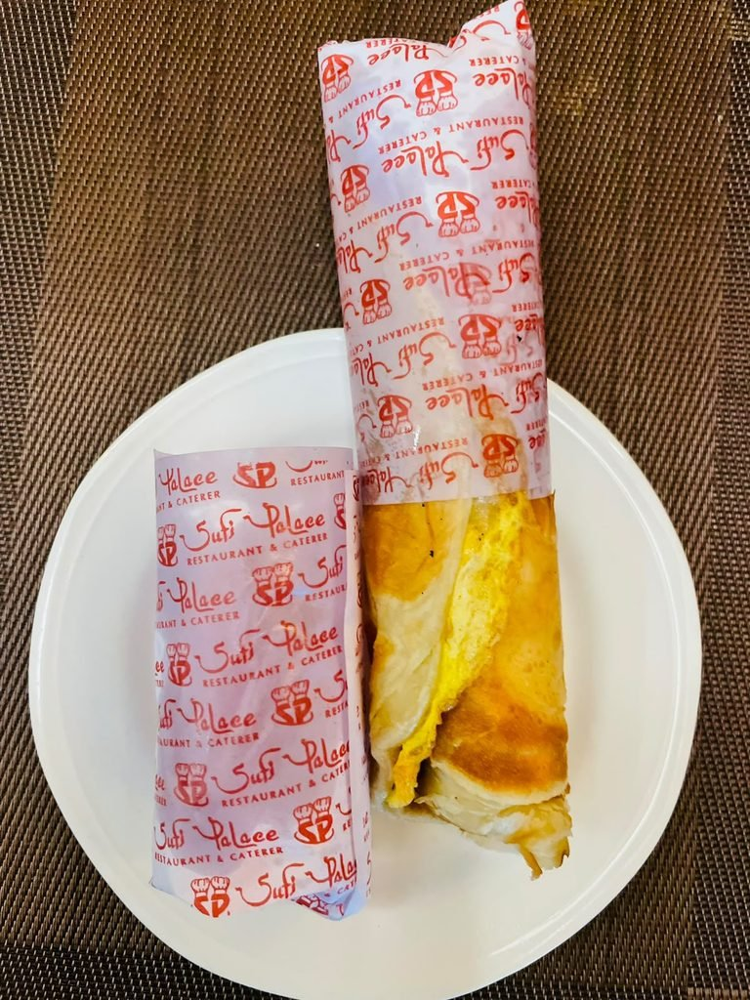
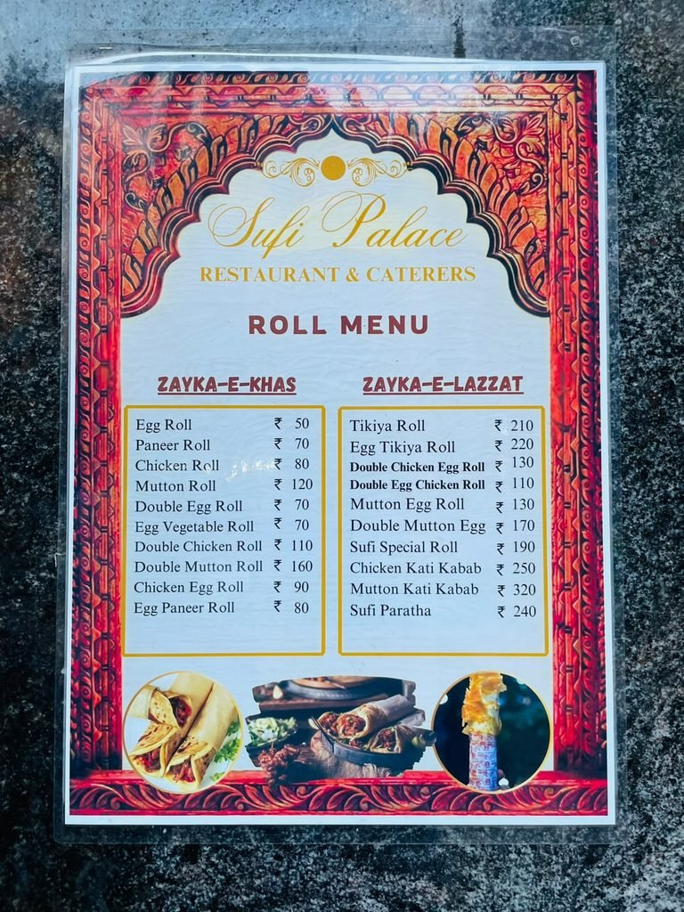

Mughlai biryani ✥
Mughlai flavours in the heart of College Street.
Sufi Palace brings together the flavours of Mughlai cooking and the spirit of Kolkata, with a table for family, friends and good food.
Find us →From fragrant biryani to smoky kebabs, discover favourites made for sharing.


Food imagery is illustrative.
Photos, films and stories from Sufi Palace.

Photo ↗
Photo ↗
Photo ↗
Photo ↗
Menu photo ↗“Good service by staff and management well handled…”
Hrithik prasad · GoogleRead on Google ↗
“Quality Food, Little Bit Expensive But Overall A Good Place…”
tab khan · GoogleRead on Google ↗
“Food was really good.. We have ordered Chicken tandoori…”
Suvadra Sen · ZomatoRead on Zomato ↗
“The biryani was flavorful with aromatic spices and perfectly cooked rice.”
Deepsikha Nandi · ZomatoRead on Zomato ↗
Selected excerpts. Explore the source listings for all reviews and current ratings.
Order, explore dining, or read guest reviews.
Dine with us in the heart of College Street, where food and stories meet.
Get directions →113, Mahatma Gandhi Road
College Street Market
Kolkata, West Bengal 700007
+91 84500 77775
Call to confirm opening hours.